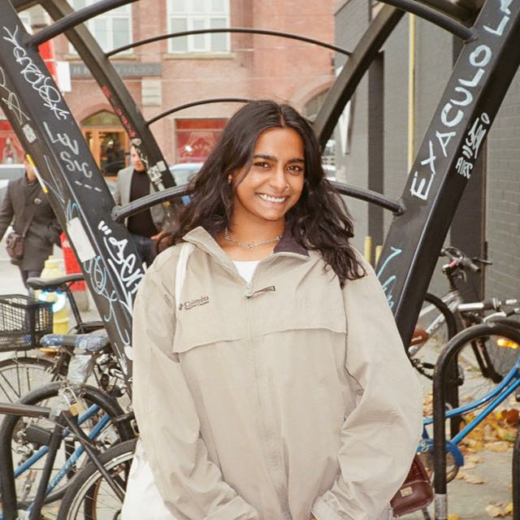

Creative Technologist | Digital Humanities Researcher
About Me

[ USER_PROFILE: r_nayar ]
I am a Digital Humanities researcher and Creative Technologist obtaining my Masters in Science in Global Digital Humanities from the University of St Andrews, and generously supported by the St Leonards Digital Education Scholarship.
My research interests sit at the intersection of critical heritage studies and software development. I am passionate about leveraging modern web technologies to create new forms of historical expression and public engagement. I am particularly interested in narrative reclamation, using digital tools to engage audiences with overlooked histories of lived experiences and the hidden connections that shape our shared past.
Currently based in Doha, Qatar my practice is a blend of academic rigor and creative experimentation, whether building maritime simulations to engage diverse audiences with the histories and legacies of trans-oceanic exchange and the enduring cultural kinship of the Indian Ocean world, or performing live-coded visuals at grassroots events.
Contact / Collaborate →// Education_History
Master of Science in Global Digital Humanities
School of Computer Science and School of Modern Languages
University of St Andrews
Honours Bachelor of Arts in History
Faculty of Arts and Science
University of Toronto
Thesis: Bathing Suit Befitting an Indian Lady: Embodied and Racialized Indian Womanhood in the 1952 ‘Miss India’ Beauty Pageant